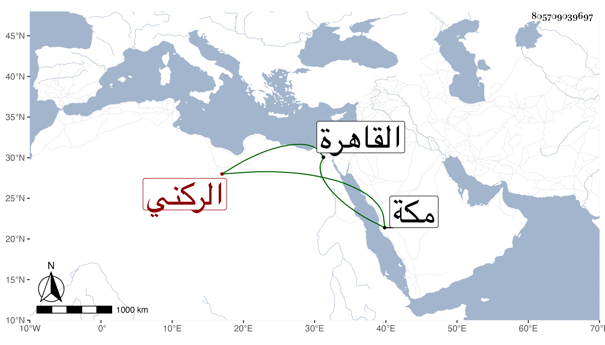

0902Sakhawi.DawLamic.ITO20230111-ara1.EIS1600.805709039697
Biography ID: 805709039697
100
بيبرس بن علي بن محمد بن بيبرس الركني بن العلائي بن الناصري بن الركني سبط الكمال محمود بن شيرين وجد أبيه هو الآتي قريبا . ولد في ليلة عيد الأضحى سنة ست وسبعين بالقاهرة ومات والده وهو طفل ابن سنتين فنشأ في كفالة أمه تحت نظر وصيه الأتابك أزبك من ططج الظاهري وتردد إليه الشمس العبادي في اقرائه القرآن وكتب عليه باشارة الأتابك وسافر لمكة مع والدته سنة ست وثمانين حين كان الشهابي أحمد بن ناظر الخاص أمير الأول ثم تزوج ورزق بعض الاولاد ثم حج هو وأمه في سنة ثمان وتسعين وجاور التي تليها ، وكان منجمعا عن الناس وربما قرأ على المحلى الشافعي في مقدمة أبي الليث وتردد إلي أحيانا ، ورزقه من قبل سلفه متيسر وذلك أن الظاهر برقوق وقف حصصا أعظمها الأمناوية من الخيرية على شقيقته خوند عائشة والمعين منهم بيبرس الاكبر وأولاده . وكان أبوه على سنن بني الاكابر الامراء كما سيأتي .
